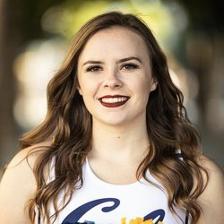
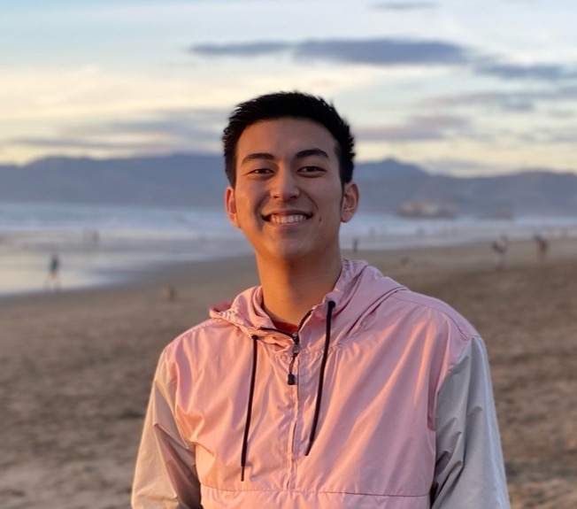

Staff
Instructors¶
 Katherine Tsai (bio) Hi everyone! I am a recent grad with majors in Data Science and Cognitive Science. In my free time I like to take naps, dance, or get gelato with friends. Data 8 was one of my favorite classes, and I am excited to get to know everyone this summer! Feel free to reach out if you have any questions or just wanna chat :)
katherinetsai@berkeley.edu
OH: Tu 3pm-4pm W 11am-12pm https://berkeley.zoom.us/j/94629756868
|
Yanay Rosen (bio) I am a recently graduated Computer Science major and Data Science minor. I was born in Israel but grew up in the suburbs around Boston. This is my first semester as an instructor and ninth semester on staff. I love Data 8 and hope you will too!
yanayrosen@berkeley.edu
OH: MTh 11pm-12pm https://berkeley.zoom.us/j/94750039475
|
Teaching Assistants ((u)GSIs)¶
|
Anna Zhao (bio) Hey there! Here are some things I love: my puppy Cookie, keyboard clicks, North China Dumpling, sappy Spotify playlists, and Data 8. Looking forward to getting to know you this summer :)
anna_zhao@berkeley.edu
|
Chenxi Jiang (bio) Hi! I'm a rising senior studying Economics, Psychology, and Data Science. In my free time, I love hiking and songwriting. I'm super excited to meet you all and enjoy Data 8 together this summer!
chenxjiang@berkeley.edu
|
Eddie Liu (bio) My name is Eddie and I'm a rising third-year majoring in data science and business administration. In my free time, I enjoy lifting, playing basketball & Spikeball, and traveling. A fun fact about me is that I was born and raised in Overland Park, Kansas!
efliu@berkeley.edu
|
Ellen Kwok (bio) Hi! I am a rising senior studying data science and cognitive science. In my free time, I enjoy making art and attempting to cook. This is my third semester on staff and I am excited to meet all of you!
ellenkwok882@berkeley.edu
|
|
Grace Altree (bio) Hi everyone, I’m Grace! I’m a rising senior studying Data Science and Cognitive Science. Apart from Data 8, I love to dance, spend time at Stinson Beach, hike, and read on the Glade. Looking forward to a great summer with you all!
gracealtree@berkeley.edu
|
 Jacqueline Yu (bio) Hello! I'm an incoming fourth year from the East Bay Area studying data science with an emphasis in cognition. In my free time, I often can be found recommending new Trader Joe's products to my friends, drinking passion fruit green tea w/ lychee jelly, laughing at dog memes, and secretly watching bad reality TV shows. Excited to meet you all this summer! :)
jacquelinekyu@berkeley.edu
|
 Jessie Houng (bio) Hey! I'm a senior pursuing degrees in Data Science and Economics, but outside of courses I love to draw, cook, and spoil my cats. My secret to staying motivated: Gordon Ramsay Hell's Kitchen rage compilations.
jeshoung@berkeley.edu
|
Kanchana Samala (bio) I am an upcoming junior studying Data Science and pursuing the Calteach minor. I am part of SKY Campus Happiness Club at Berkeley and I meditate daily. I love listening to music and watching Turkish TV shows. I am available to listen and talk about anything, please feel free to reach out!
kanchoo@berkeley.edu
|
|
Kyle Kishimoto (bio) Hi! My name is Kyle, and I'm a junior majoring in math with a teaching concentration, and minoring in STEM education and data science. I plan to pursue a career in teaching after graduation. AMA about sports (especially baseball), education, or anything else.
kylek@berkeley.edu
|

Natalie Gomas (bio) What's up, I'm Natalie and I graduated this spring but am hanging around for the summer so I can help teach my fav class one more time :-))). I'm a huge fan of data science and Trader Joe's (send me any recs you have!!). Can't wait to meet you all soon <3
nataliegomas@berkeley.edu
|
 Olivia Chang (bio) Hi everyone! I'm Olivia, a rising senior majoring in Statistics and Data Science. I love traveling, hiking, and playing with my Goldendoodle Harley! Excited to meet you this summer :)
o.chang@berkeley.edu
|
 Oscar Bjorkman (bio) Hi everyone! I'm a rising junior studying Computer Science with a focus on security. I love exploring new food places and travelling with friends and family. Excited to meet all of you!
oscarb@berkeley.edu
|
|
Raymond Lui (bio) I'm a third year student from San Francisco majoring in EECS and minoring in Data Science. This is my second semester on course staff and I'm excited to meet all of you. I'd recommend you check out some national parks if you have time!
ralui@berkeley.edu
|
 Rita Wang (bio) Hello! I am a rising fourth year studying Data Science and Computer Science and I am super excited to meet all of you over the summer! In my free time I like to explore photography and videotography. My goal for life is to travel every year and witness what nature has to offer!
ritawang@berkeley.edu
|
Rohan Goel (bio) What's up! I'm a rising junior studying Statistics and Data Science, and I'm so pumped to be a uGSI this summer! Feel free to hit me up about anything football (big Niners fan), fitness, nature, this class, school, or anything!
rgoel777@berkeley.edu
|
 Ryan Chien (bio) Hey everyone!! I'm Ryan, a rising SUPER senior majoring in Data Science and Statistics from Irvine!! I've been on staff for 5 semesters now and I've loved it so much I've postponed my graduation! Jokes aside, I'm super excited to meet and work with everyone this semester!
ryanchien04@berkeley.edu
|
|
Stephanie Xiao (bio) Hi! I'm a rising third-year studying CS + design from San Jose. I have a cockatiel named Charlie, and he loves whistling the My Neighbor Totoro theme song and jamming out to Ariana Grande. I also spend too much time watching k-dramas and playing league. Excited for an awesome summer!
stephaniex@berkeley.edu
|
 Takao Kakegawa (bio) Hi everyone! My name is Takao and I am a rising senior majoring in Applied Mathematics. Data 8 has been one of my favorite classes at Cal and I hope you all enjoy it as much as I did! Feel free to reach out if you have any questions or just want to chat!
takaokakegawa@berkeley.edu
|
 Wendy Kim (bio) Hi! I'm an incoming third year from Irvine studying Data Science. Big fan of oat milk, nighttime views, and Data 8. :) Looking forward to a rewarding summer semester with everyone!
wendykimm@berkeley.edu
|
Tutors¶
|
Ashwin Natampalli (bio) Hey everyone! I'm a rising sophomore from the Bay Area passionate about computer science, mathematics, Super Smash Bros., and sunrise hikes. Data 8 solidified my love for statistics, and I'm confident you'll feel the same way soon enough! Excited for this summer :)
itisashwin@berkeley.edu
|
Ciara Acosta (bio) Hey y'all! My name is Ciara, and I'm a Data Science and Econ major. This is my first semester on staff, so I am super excited to work with you guys! In my free time you can catch me playing tennis or grabbing boba.
ciara.acosta@berkeley.edu
|
Devin Sze (bio) Hi yall, my name's Devin. I'm a sophomore studying cs and ds, in my free time I like playing Minecraft and doing gRaPhiC dEsIgN. Super excited to meet yall ❤️❤️❤️
devin.sze@berkeley.edu
|
 Emily Guo (bio) Hey! I'm a rising junior studying Data Science and Economics. In my free time, I like to travel, listen to music, and watch YouTube videos. Looking forward to meeting you all!
lingjunguo@berkeley.edu
|
|
Eunice Choi (bio) Hello! I'm Eunice and I'm a rising junior studying Data Science and Public Policy. I love going on hikes, doing crafts, and spoiling my dog, Truffle. Looking forward to meeting you all this summer :)
eunicechoi@berkeley.edu
|
Grace Yi (bio) Hi! I'm Grace, a third year CS major from Union City, CA. I enjoy taking naps, binging dramas and listening to music as an escape from reality. I'm super excited to be tutoring for Data8 this summer and I hope you all will have an amazing experience!
graceyi89@berkeley.edu
|

Haru Yamamoto (bio) Hey guys! My name is Haru Yamamoto, and I am a rising junior studying Molecular and Cell Biology, with a minor in data science. I'm from Yokohama, Japan and Greenwood, IN. Data 8 was one of the first data science courses I ever took and my first exposure to programming, so I'm excited to help introduce these concepts to you guys as well!
haru.yamamoto@berkeley.edu
|
Jessica Qian (bio) Hey y'all! I'm a rising 3rd year majoring in Data Science and minoring in Computer Science + Japanese. I love singing, art, cooking, and clouds. Looking forward to meeting you all!
jaqian@berkeley.edu
|
|
Joanna Yoo (bio) Hey guys! I'm Joanna and I'm a rising junior studying data science. I'm originally from Seattle and love anything related to food! Looking forward to meeting you all!
joannayoo@berkeley.edu
|
Joshua Alvarez (bio) Yooo im a senior data science major. Im from LA and i love surfing, watching boxing, and listening to jazz.
cayanan.joshua@berkeley.edu
|
 Kinsey Long (bio) Hi all! I'm Kinsey, a 3rd year from Hong Kong majoring in Chemical Biology and minoring in Data Science and Bioengineering. Come talk to me about music, politics, food, board games, or anything cool!
kinsey.long@berkeley.edu
|
 Lillian Weng (bio) Hello! My name is Lillian, and I'm an incoming sophomore from the Bay Area hoping to study CS. Data 8 has been my favorite class at Cal and helped me pick my major, so I'm very excited to be on staff this semester :))'
lillianweng@berkeley.edu
|
|
Mark Cheung (bio) Hi, I'm Mark and I'm a 3rd year studying data science from SoCal. I like basketball, playing guitar and bass, and chess.
markcheunggg@berkeley.edu
|
Mei Johnson (bio) Hey! My name is Mei, and I'm a third year majoring in Data Science with an emphasis in Business and Industrial Analytics. When I'm not in class, you can catch me rating movies on Letterboxd or trying to make fried rice without setting off my apartment's fire alarm. I hope you enjoy Data 8, and I look forward to meeting you all!
meiji193@berkeley.edu
|
 Noah Tran (bio) Nice to meet everyone! I'm Noah and I'm planning on studying statistics or data science. I'm excited to work with everyone this semester! Talk to me about stationery or figure skating!
noah.s.tran@berkeley.edu
|
Padma Venkatraman (bio) Hello! I'm an Astro/Data Science double major and super excited to be working with Data 8 this summer:) Data 8 is one of my most favorite classes here at Cal and is the reason I chose to major in DS. Some of my other interests are music, reading and watching shows. Looking forward to meeting you all!
vpadma@berkeley.edu
|
|
Peter Valverde (bio) I am a second year from San Diego. I love hiking, running, and lifting. Feel free to reach out!
pverde1@berkeley.edu
|
Prasann Guruprasad (bio) Hi everyone! I am a junior from Bangalore, India studying economics and statistics. Outside of class, I am a huge soccer fan (brownie points if you call it 'football') and I support Bayern Munich.
gprasann@berkeley.edu
|
Sandra You (bio) Hi friends! I'm Sandra from China/San Diego. I'm a rising junior majoring in chemistry and data science. I love teaching and meeting new people :) In my free time, I enjoy hiking, cooking, and music. Looking forward to a fun semester with y'all!
xinyueyou@berkeley.edu
|
Sara Fang (bio) Hi everyone! I'm a third-year from the Los Angeles area majoring in data science and minoring in computer science. I love music, art, photography, food, and fashion, as well as spending quality time with my friends.
sarafang@berkeley.edu
|
|
Sarah Zhang (bio) Hi! I'm a rising junior studying Environmental Sciences and Data Science. In my free time, I like to skate (on the Cal Figure Skating Team!), search for new things to craft and bake on Pinterest, and collect copious amounts of avocado pits to grow as houseplants. I'm excited to meet you all!
sarah.zha@berkeley.edu
|
Sean Wei (bio) Hey, everyone! I'm a third-year data science student from San Diego, California. In my free time, I love watching and playing sports with my friends (mostly baseball and football), hiking, and binge-watching Netflix and Disney Plus.
seanwei2001@berkeley.edu
|
Stella Wang (bio) Hi! I am a Junior studying Data Science + Media Studies. Feel free to hit me up about puppiesüê∂, tennisüéæ, pokeü•ó, or anything about DataüíØ. Can‚Äôt wait to meet you all and looking forward to a great semester!
stella1001wang@berkeley.edu
|
Vishnu Karukonda (bio) I am a fourth year studying Data Science and Molecular & Cell Biology. I love trying new kinds of coffee and tea around the Berkeley area. I'm excited to be on course staff this summer!
vkarukonda@berkeley.edu
|
|
Vivrd Prasanna (bio) I'm Vivrd, and this is my first semester on the Data 8 staff. I grew up right here in the Bay Area. I'm majoring in Data Science, and I hope we all have a great time in Data 8!
vivrd@berkeley.edu
|
Disclaimer: The views and opinions expressed by individual staff members are those of the authors, and do not necessarily reflect the official policy or position of UC Berkeley or any other organization.